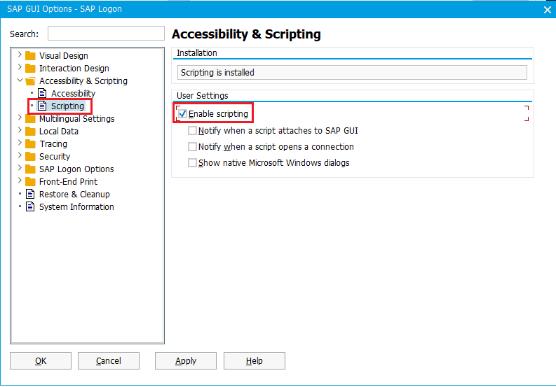
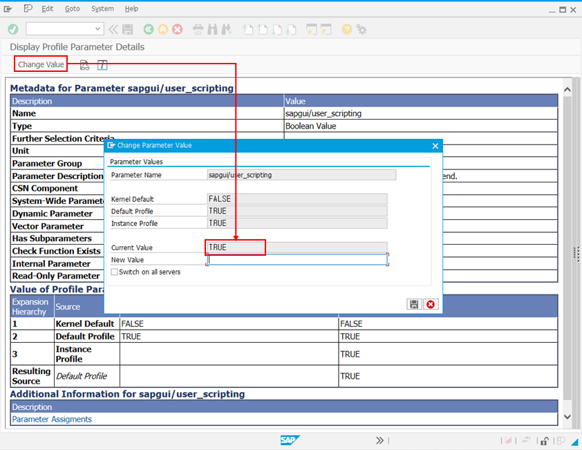
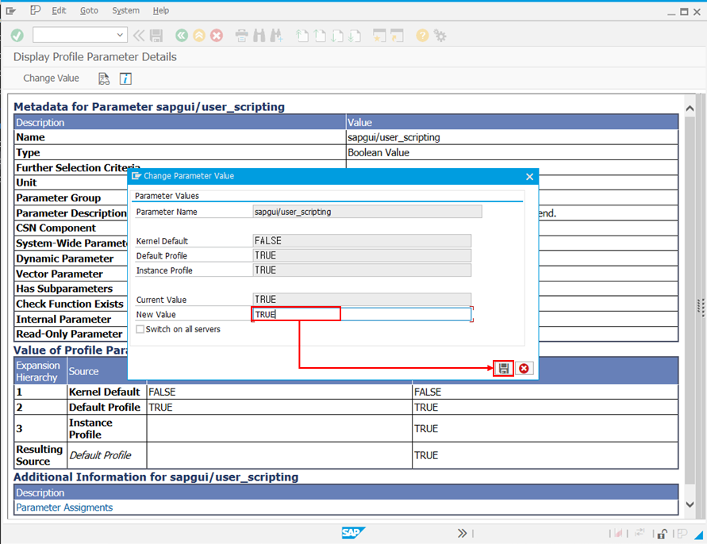
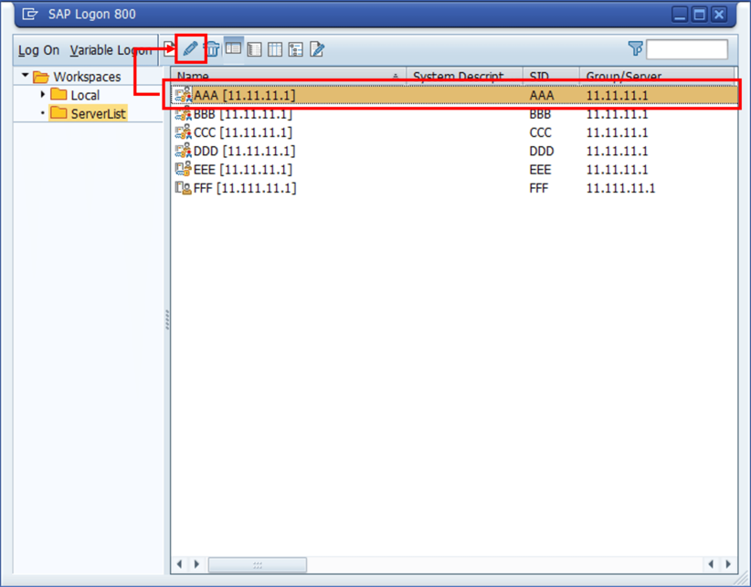
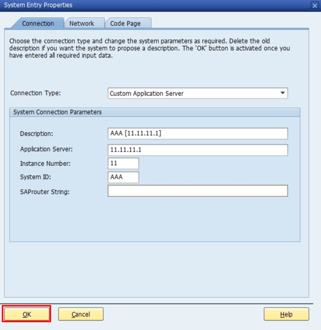

Troubleshooting Guide: Controller Class Errors in U4A Workspace (WS)
Enable Scripting in SAPGUI Settings
1. Open SAPGUI
2. On the SAP Logon Pad screen (where servers are listed), click the SAP icon in the top-left corner.
3. Select "Options..." from the menu.

4. In the left navigation panel, expand the "Accessibility & Scripting" section.
5. Click on "Scripting".
6. Under "User Settings" on the right, ensure "Enable scripting" is checked.

Confirm Scripting Availability After Login
1. Press Alt + F12.
2. Check if the "Script Recording and Playback..." option is active and selectable.

Verify System Profile Parameters
1. Enter the transaction code "RZ11" to access the "Edit Profile Parameters" screen.
※ If you do not have access, contact your system administrator (BC).
※ If you do not have access, contact your system administrator (BC).
2. In the "Parameter Name" field, type "sapgui/user_scripting" and click "Display"

3. Click "Change Value" in the top-left corner.
4. In the popup window, verify if the "Current Value" is set to "TRUE"

4. If not, type TRUE in the "New Value" field and save the change.

5. Restart both SAPGUI and U4A Workspace (WS).
If SAPGUI Has Been Upgraded
If SAPGUI has been upgraded after installing Workspace 3.0, follow the steps below.
1. Close all running instances of the Workspace 3.0 program.
2. When launching SAPGUI, select the previously registered server and click the Edit button at the top.

3. Click the Confirm button to save the settings.

4. Restart the Workspace 3.0 program.
Checklist by Error Message
"Login session not found."
📑 Refer to the following steps to check whether multi-login is allowed on the connected server.
※ If multi-login is not allowed on the server, an error message may occur and execution may fail when attempting multiple logins.
※ If multi-login is not allowed on the server, an error message may occur and execution may fail when attempting multiple logins.
1. Enter the transaction code "RZ11" to access the "Edit Profile Parameters" screen.
※ If you do not have access, contact your system administrator (BC).
※ If you do not have access, contact your system administrator (BC).
2. In the "Parameter Name" input field, enter "login/disable_multi_gui_login" and click the "Display" button.
※ Refer to the Verify System Profile Parameters section.
※ Refer to the Verify System Profile Parameters section.
3. If the value of the Default Profile (outlined in red in the image below) is 1,
it means the system is configured to prevent duplicate logins with the same account.
In that case, terminate any existing SAP GUI sessions and relaunch in an environment without duplicate logins.

"\\AppData\Roaming\com.u4a_ws3.app\ext_api\vbs\sapgui_ws.vbs(204, 3) WshShell.RegRead: .... "HKCR\SapFront.App\protocol\StdFileEditing\server\ ...."
📑 This issue may occur when SAP GUI has been upgraded from version 770 to 800.
※ Refer to the If SAPGUI Has Been Upgraded section.
※ Refer to the If SAPGUI Has Been Upgraded section.
If the Issue Persists
If the problem persists after completing the steps above, reach out to the U4A R&D Team for further support.